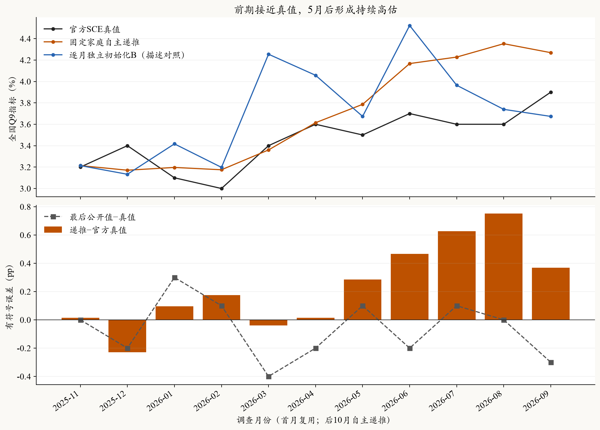
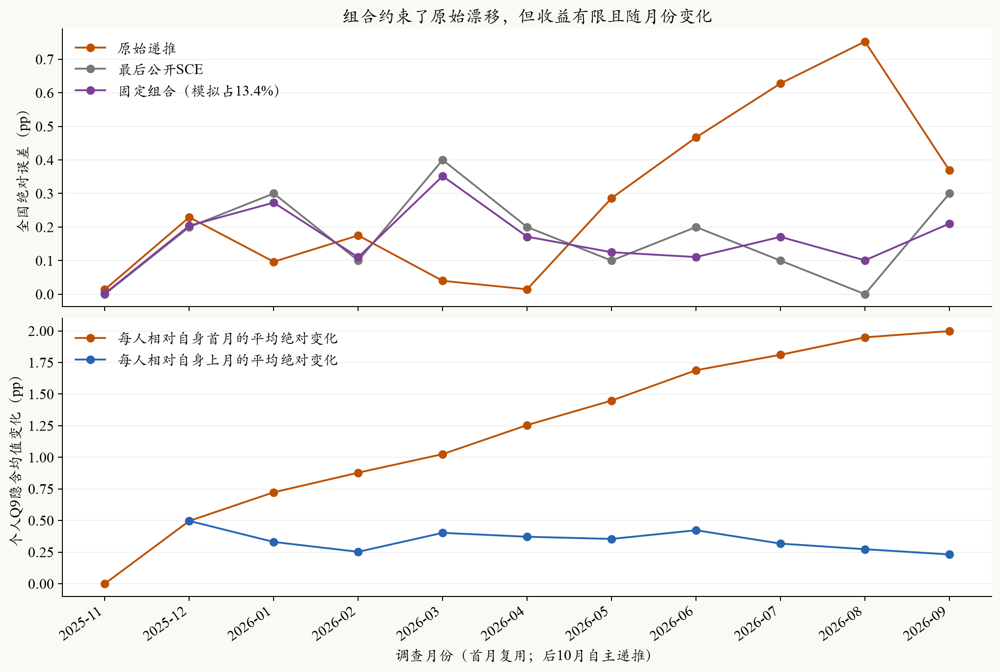
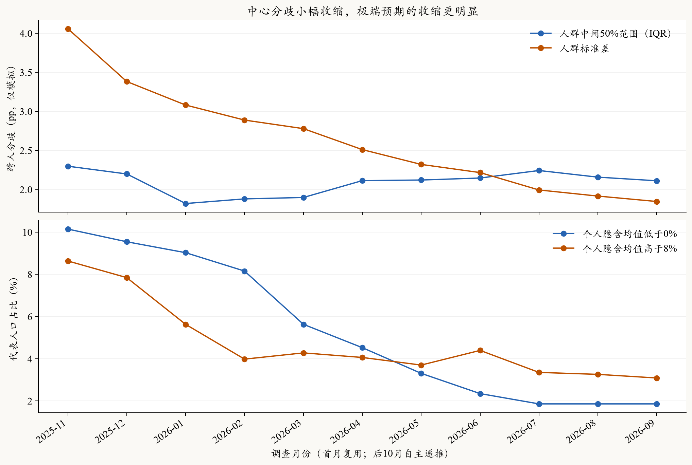
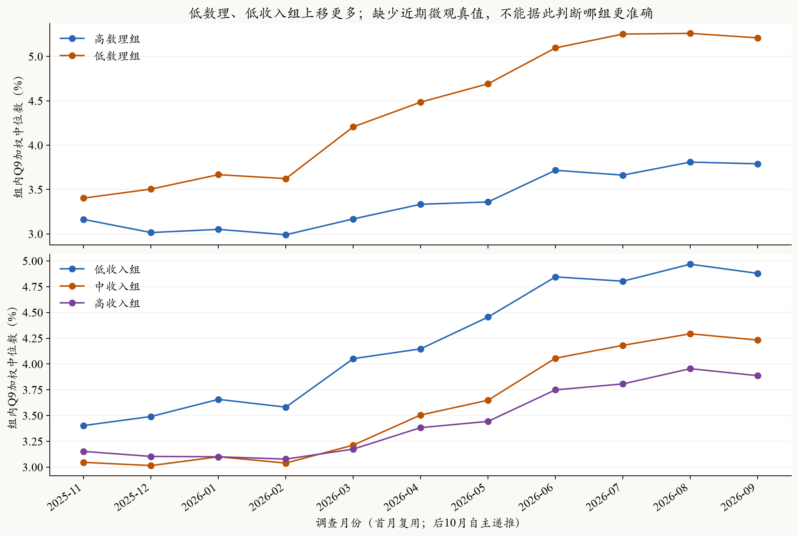

SCE · 月度连续递推 · 2026-10-26 · 完成后的离线分析 · 本轮0 API
前期接近真值，后期向上漂移；连续递推需要定期校准
这条链可以持续运行，但不能长期视为自动校准的调查替代。后10期原始MAE为0.306pp，高于最后公开值基线的0.190pp；误差主要集中在后半段的持续高估。它并非每一步都变差，9月已有回落；现有结果支持漂移风险，还不能将后期误差全部归因于递推。
前五次递推MAE0.111pp2025-12—2026-04
后五次递推MAE0.500pp2026-05—09，均为高估
最高单月偏差+0.753pp2026-08：4.353% vs 3.6%
1．研究的是哪一个环节？
固定2025年11月的512个代理家庭，复用该月512份实际模型回答。2025年12月至2026年9月，每人以自身上一个模拟月的Q8、Q9和更早模拟摘要为起点，再读取当月截止前的新闻、价格与政策，生成新答卷。画像、权重、食品采购角色和关注档位固定；没有新旧受访者进出，也没有按月重新对齐全国SCE。
同一家庭上月模拟答卷＋模拟历史摘要 → 更新后的可见环境 → 本月Q8/Q9 → 保存状态 → 下一月
模型：OpenRouter → SiliconFlow FP8 → DeepSeek V3.2；温度0.5，JSON，关闭思考；每人每月一遍。
这是无外部先验刷新、自主传递个人状态的动态实验。首月复用，不作为新的独立验证；主要比较根月之后10期。所有家庭均由LLM作答，本批没有Core＋Normal扩展，512户用固定设计权重汇总。
2．误差是否累积？
前五次递推的平均偏差只有+0.003pp，3月与4月误差分别仅0.040和0.015pp。5月开始连续高估，误差依次为+0.286、+0.467、+0.628、+0.753、+0.369pp。7—8月真值为3.6%，模拟仍从4.228%升到4.353%；9月模拟降至4.269%，真值升至3.9%，因此误差收窄。表现是阶段性的偏差积累，不是误差单调增长或数值爆炸。

同一全国官方首发Q9口径；Q9由每人十档概率拟合连续密度并取隐含均值，再取跨人加权中位数。独立B的初始化与名单同时不同，仅作描述对照。
前后各五期只是观察结果后的等长描述，不是预先划定的训练／测试集。递推步数增加与经济环境变化同时发生；只有一条链，因此不能断言“每递推一次就增加多少误差”。前期准确也不能外推为固定的安全递推期限。
3．与基线及原路线B相比如何？
自主递推原始MAE比独立B的0.382pp低约20%，但仍比持续性基线高。其固定组合沿用A线预定模拟权重13.3976%，不在这10期重新拟权：MAE为0.1827pp，比基线0.1900pp低约3.8%，改善很小。独立B用同样权重组合为0.1585pp，仍优于递推组合。单独模拟更准，不等于与公开值组合后的增量更大；还取决于模拟在何时修正、何时放大基线误差。

组合Z＝0.866024×最后已公开SCE＋0.133976×递推指标。组合只在评价时加入公开锚，未写回个人递推状态，不能用组合成绩掩盖原始链的漂移。
若连复用首月也计算，11期原始MAE为0.2792pp、组合0.1663pp、基线0.1727pp。这组数字单列为补充；与上述10期成绩不能混用。
4．个人结构发生了什么？
到最后一月，67.5%的代表人口高于自身首月预期；每人相对自身首月的平均绝对变化约2.00pp。跨人标准差从4.059降到1.848pp，收缩约54.5%；IQR从2.299降到2.113pp，收缩约8.1%。这两个结果并不矛盾：极端预期的收缩比中间50%人群更明显，分布整体还向上移动。

这里是不同家庭的Q9隐含均值分布，不是每份Q9概率分布内部的不确定性。没有近期真人微观资料，因此不能把模拟分歧收缩直接判定为微观准确率下降。
低数理组的组内中位数从3.403%升到5.210%，高数理组从3.163%升到3.790%；低收入组从3.403%升到4.879%，高收入组从3.153%升到3.887%。漂移不是所有人共同加上同一个常数。各属性相关，当前分组是边际描述，不能把差异解释为数理能力或收入的独立因果作用。Q8中位数也从3.5%升至4.4%，方向与Q9一致，但没有对应近期Q8真值可评价误差。

固定身份、固定权重；图示分组不是本轮新增的分层抽样，也不是对近期真实人群的独立验证。
5．机制解释与后续调整
本轮结果与一种反馈机制相容：当月判断偏高，会成为下月的起点，同时进入个人历史均值；后续判断由此承接偏高状态，而缺少新公开SCE对合成总体的纠偏。初始极端信念逐步收缩，中心随后上移，说明“原有分歧收缩”和“中心偏差积累”可以同时发生。环境冲击、起始人口与模型更新特征仍混在一起，现有数据不能分离其贡献。
新闻窗口也允许同一篇文章再次出现；已统计相邻月重复曝光，但提示已区分其相对上一状态的公开先后，重复出现不能直接证明模型把信息重复计算。周度任务应保留已见新闻记录、约束接触预算，并明确哪些是新增证据，避免机械地把月度新闻量每周重复投放。
后续采用你已确定的周度方案：同一批家庭在两个SCE发布时点之间连续传递信念；一旦新的过去月份SCE公布，按既有B方法校准合成起点后再递推。校准后贴合公开值只是约束满足，成绩应取新目标发布前已保存的预测。此实验提供采用定期校准的动机，但尚未证明周度校准一定提高预测精度。
6．运行、核查与适用边界
新增5,120主请求＋40次技术补跑，共5,160次新尝试；API已报费用$4.2752，未知费用预留$0.1735另列，合计记账$4.4487，低于$10上限。5月1户Q8/Q9在补跑后仍技术失败，按原规则保留其上月状态；原始答复、补批和字段来源均保留，不继续重跑。
本次核查378项冻结来源，复算全部11个月中位数和原主指标；检查5,120次同人前驱连接及实际提示中的原状态、5,632份历史无重复／未来月份，并核查84,480次新闻时间。没有发现串人、跳月、历史重复追加或未来新闻进入可见输入。该核查不等于认证模型训练知识和历史文本版本。
查看逐月全国数值
数据来源：outputs/sce_recent_b_recursion_terminal_20261026_v2；固定512户、加权ESS约438，不是每月真实调查全名单。结果为事后按历史信息截止进行的回顾性诊断，只有10个新增宏观月份，不能按5,120户月当作独立预测样本。本页0新API、0新Q9拟合、0参数重估；原评价及运行文件不改。
机器可读完整分析 · 冻结运行说明 · 周度校准方案